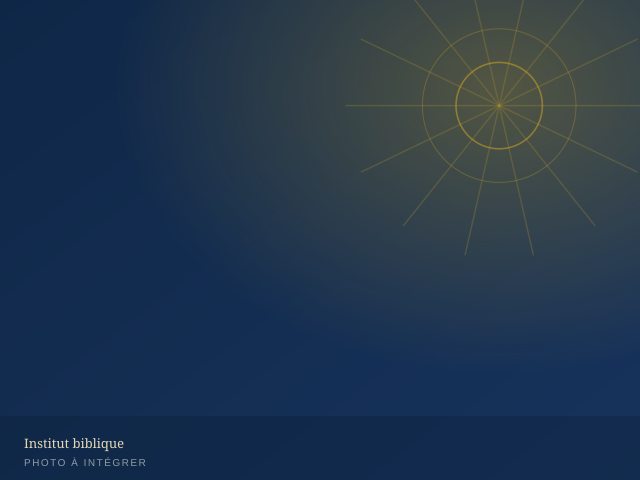
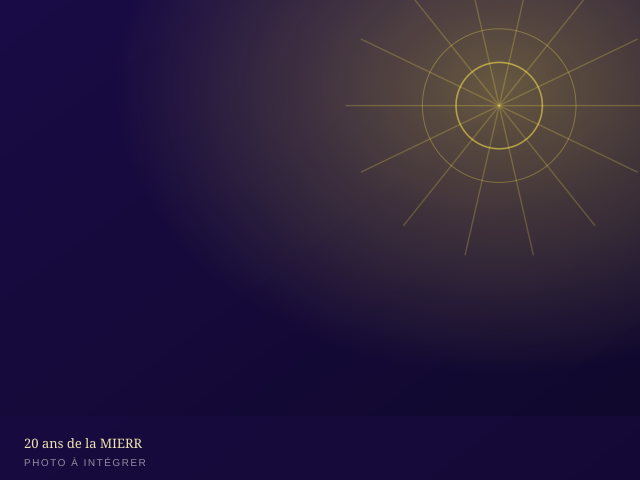
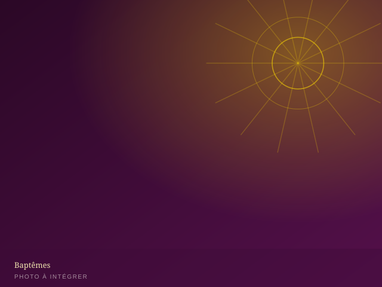
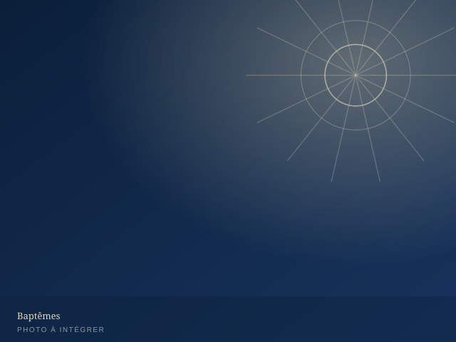
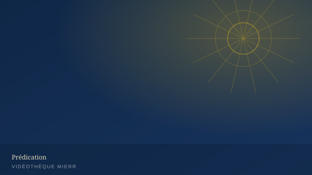
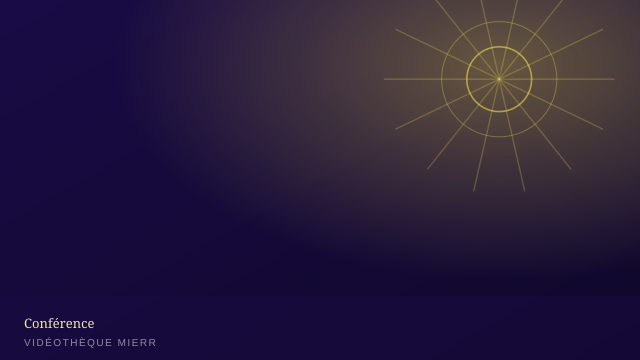
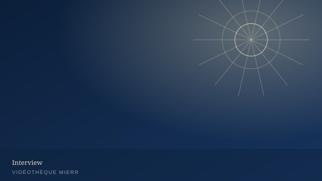
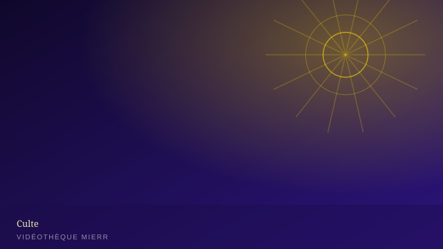

Accueil/Galerie
En images
La MIERR en photos & en vidéos
Vingt années de conventions, de séminaires, de baptêmes et de célébrations. Parcourez nos albums et revivez les temps forts de la mission.








Galerie évolutive : une fois le back-office activé, chaque album (photos et vidéos) pourra être créé, réordonné et légendé sans intervention technique — module « Galerie / Albums ».
En mouvement
Extraits vidéo

▶
▶
▶
▶